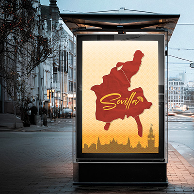
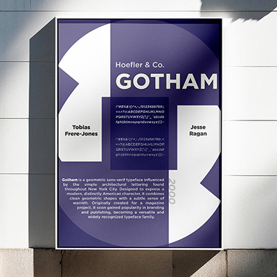
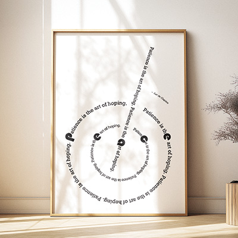

Posters

Sevilla City Poster Design
Celebrating the cultural identity of Sevilla, Spain, the poster combines a flamenco dancer’s silhouette with the geographic outline of the province, complemented by architectural landmarks and traditional Spanish tile patterns. Warm orange and deep red tones reference the region’s iconic bitter oranges and bullfighting heritage, creating a vibrant composition rooted in local culture and visual storytelling.
Target Audience: Tourism boards, travel agencies, and poster design enthusiasts

Gotham Typeface Specimen Poster
This typographic poster explores the geometric and architectural qualities of the Gotham typeface through oversized, overlapping letterforms, dramatic purple tones, and carefully integrated typography, balancing expressive visual experimentation with the functional elements of a traditional type specimen.
Target Audience: Tourism boards, travel agencies, and poster design enthusiasts

Patience & Hope Pendulum Typographic Poster
Exploring themes of patience and hope amid political uncertainty, the poster transforms typography into a symbolic pendulum, using curved text and a prominent interpretation of the word peace to convey the passage of time, the cyclical nature of conflict, and the possibility of a more peaceful future.
Target Audience: Graphic designers, typographic artists, and editorial layout directors
← Back to Galary